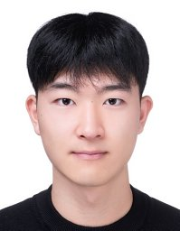

Woong Choi
Ph.D. Student · Chemical and Biological Engineering · Seoul National University
I am a Ph.D. student in the Compound Semiconductor Process & Characterization Laboratory (CPCL) at Seoul National University, advised by Prof. Jihyun Kim. I received my B.S. in Chemical and Biological Engineering from Korea University.
My research develops damage-free, plasma-free processes for semiconductor fabrication: catalyst- and light-driven wet etching of ultrawide-bandgap β-Ga2O3 for transistors and photodetectors, and photo-assisted wet cleaning of High-NA EUV photomasks.

Education
Seoul National University · Mar. 2022 – Feb. 2028 (expected)
Ph.D., Chemical and Biological Engineering / Advisor: Prof. Jihyun Kim
Korea University · Mar. 2016 – Feb. 2022
B.S., Chemical and Biological Engineering
Research Interests
Conventional dry etching and high-temperature cleaning damage the very surfaces they are meant to shape. I replace them with catalyst- and light-driven chemistry at room temperature, and carry the resulting processes into working devices.
- Metal-assisted chemical etching (MAC) of Ga2O3 — photo-enhanced, inverse, and forward MAC
- β-Ga2O3 device processing — self-aligned recess-gate MESFETs, Ohmic contacts, UV-C photodetectors
- Wet and photo-assisted cleaning of Ta-based and High-NA EUV photomasks
- Vapor-phase HF catalytic etching of SiO2 and quartz
Recent News
- Jul. 2026Poster at NANO KOREA 2026, Ilsan — Achieving E-Mode β-Ga2O3 MESFETs with Self-Aligned Gate-Recess Structure by Forward Metal-Assisted Chemical Etching
- Apr. 2026Presented at the 2026 MRS Spring Meeting & Exhibit, Honolulu — forward metal-assisted chemical etching for self-aligned recess-gate β-Ga2O3 MESFETs
- Jan. 2026Presented at the 33rd Korean Conference on Semiconductors, Jeongseon — photo-assisted wet cleaning of Sn particles on High-NA EUV masks
- Sep. 2025Presented at SPIE Photomask Technology + EUV Lithography 2025, Monterey
- May 2025Journal cover — Annealing-Free Ohmic Contact of β-Ga2O3 via Nitrogen Plasma Treatment was selected for the cover of Journal of Materials Chemistry C
Earlier news
- Oct. 2024Oral presentation at ECS PRiME 2024, Honolulu
- Apr. 2024Oral presentation at the KIChE Spring Meeting 2024, Jeju
- Nov. 2023Presented at ICAE 2023, the 7th International Conference on Advanced Electromaterials, Jeju
- Sep. 2023Best Student Presentation Award, 6th Korea Gallium Oxide Technology Workshop, Yeosu
- May 2023Oral presentation at the 243rd ECS Meeting, Boston
- Feb. 2023Poster at the 30th Korean Conference on Semiconductors, High1 Resort
Publications
† Equal contribution · highlighted rows are first-author papers · full list in CV
J. Kim†, W. Choi†, S. Lee, S. Moon, J. Kim
ACS Materials Letters (accepted)
Y. Lee, S. Moon, S. Ko, D. Lee, S. Yang, W. Choi, J. Kim, D. Lee
ACS Applied Electronic Materials (2026)
W. Choi†, J. Park†, M. Kim, J. Kim
ECS Journal of Solid State Science and Technology 14, 125002 (2025) / paper
W. Choi†, S. Lee†, S. Moon, K. H. Baik, J. Kim
ACS Applied Electronic Materials 7, 8618 (2025) / paper
J. Kim, H. W. Kim, W. Choi, J. Kim, D. Lee
Journal of Materials Chemistry C 13, 10561 (2025)
S. Lee, J. Kim, W. Choi, J. Kim
ACS Photonics 12, 2112 (2025)
J. Park†, W. Choi†, J. Kim
Nanotechnology 35, 205701 (2024) / paper
W. Choi, D.-W. Jeon, J.-H. Park, D. Lee, S. Lee, K. H. Baik, J. Kim
Materials Advances 4, 4520 (2023) / paper
Patents
Korean patent applications (titles translated)
- Wet etching method for alloy thin films and method of forming EUV mask patterns using the same — KR 10-2026-0048918 (2026), with Samsung Electronics
- Semiconductor device — KR 10-2026-0039127 (2026)
- Method and apparatus for cleaning photomasks — KR 10-2025-0098016 (2025), with Samsung Electronics
- Photodetector — KR 10-2025-0046552 (2025)
- Method for etching gallium oxide using catalytic wet etching — KR 10-2022-0144719 (2022)
Conference Presentations
- Forward-MAC etching of β-Ga2O3 and self-aligned recess-gate MESFET — Nano Korea 2026, Ilsan (Jul. 2026)
- Forward Metal-Assisted Chemical Etching for Self-Aligned Recess-Gate β-Ga2O3 MESFETs — 2026 MRS Spring Meeting, Honolulu (Apr. 2026)
- Improving the removal efficiency of Sn particles on High-NA EUV masks via photo-assisted wet cleaning — 33rd Korean Conference on Semiconductors, Jeongseon (Jan. 2026)
- Photo-assisted wet cleaning of tin contaminants on High-NA EUV masks — SPIE Photomask Technology + EUV Lithography, Monterey (Sep. 2025)
- Applying plane contact in β-Ga2O3 via photo-enhanced metal-assisted chemical etching to improve Ohmic contact — Korea–Japan Symposium on Materials and Interfaces, Seoul (Nov. 2024)
- Plane-selective metal-assisted chemical etching for good Ohmic contact to β-Ga2O3 — ECS PRiME 2024, Honolulu (Oct. 2024)
- Anti-ambipolar transistor via β-Ga2O3/WSe2 mixed-dimensional heterostructure — KIChE Spring Meeting 2024, Jeju (Apr. 2024)
- β-Ga2O3/WSe2 anti-ambipolar transistor — ICAE 2023, Jeju (Nov. 2023)
- Photo-enhanced inverse metal-assisted chemical etching of alpha-phase gallium oxide — 6th Korea Gallium Oxide Technology Workshop, Yeosu (Sep. 2023)
- Photo-enhanced inverse metal-assisted chemical etching of α-Ga2O3 grown on Al2O3 — 243rd ECS Meeting, Boston (May 2023)
- Inverse metal-assisted chemical etching of α-phase gallium oxide — 30th Korean Conference on Semiconductors, Jeongseon (Feb. 2023)
- Inverse metal-assisted chemical etching of β-Ga2O3 using quantitative analysis — 5th Korea Gallium Oxide Technology Workshop, Daejeon (Aug. 2022)
Experience
Research
Projects
Samsung Electronics, Semiconductor R&D Center / Mask Development Team
Gallium oxide UV sensors for extreme environments Apr. 2022 – Present
Korea Evaluation Institute of Industrial Technology (KEIT)
Honors &
Awards
Journal cover, Journal of Materials Chemistry C 13 (2025)
Teaching
Teaching assistant, Chemical and Biological Process Laboratory (Spring 2022)